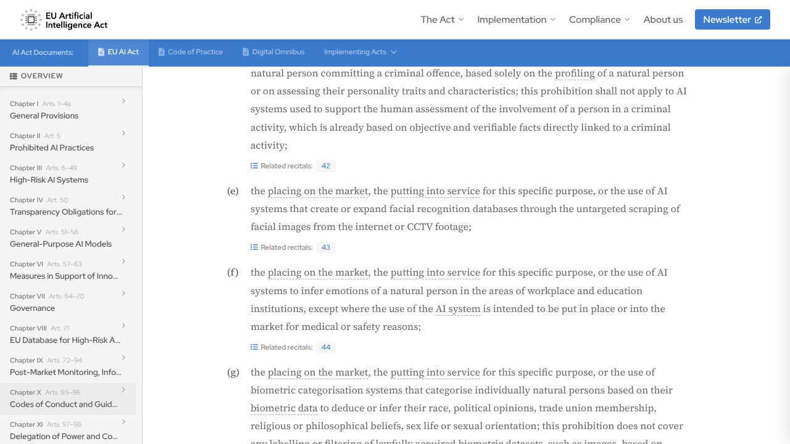
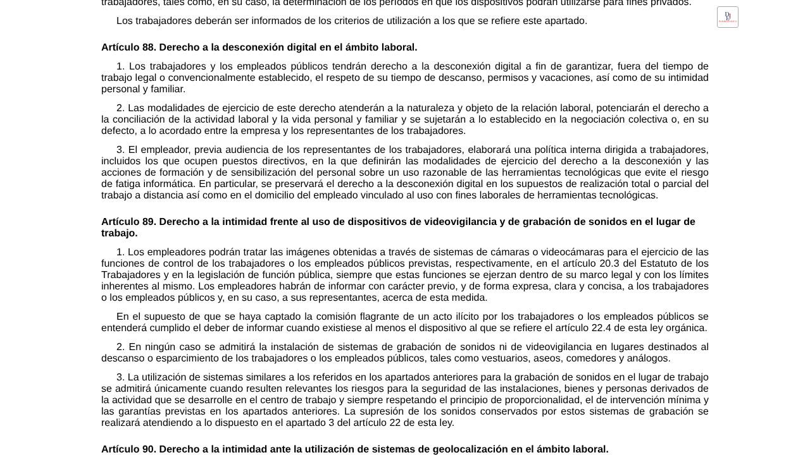

E l flujo es tan cómodo que se adopta sin pensarlo: activas la transcripción, la reunión acaba, y a los dos minutos tienes un resumen con decisiones, tareas y responsables. Nadie toma notas, nadie discute después qué se dijo, y el acta sale escrita antes de que la gente cierre el portátil. Comparado con el acta que no se escribía nunca, es una mejora enorme.
El problema aparece más tarde, y casi siempre de una de estas dos formas. La primera: alguien descubre que el acta le atribuye un compromiso que no recuerda haber hecho, y tiene razón, porque no lo hizo. La segunda: alguien pregunta quién autorizó grabar aquella reunión, y resulta que nadie lo pensó.
Las dos tienen arreglo, y ninguna de las dos se arregla eligiendo mejor herramienta. Esta guía va de las tres cosas distintas que hace una «IA de reuniones», de dónde se equivoca cada una con datos publicados, de lo que la ley española y europea te pide antes de grabar, y del flujo mínimo que convierte todo eso en un acta que aguanta. Si lo que buscas son herramientas de transcripción concretas, incluidas las que funcionan sin subir el audio a ningún sitio, están en clonar voz, transcribir y generar audio con IA.
Tres cosas distintas, no una
Cuando dices «la IA me hace el acta» estás encadenando tres sistemas diferentes, y conviene separarlos porque fallan de maneras que no se parecen en nada.
- Transcribir. Convertir el audio en texto. Es la parte más madura y la que mejor funciona de media.
- Separar hablantes. Decidir quién dijo cada frase. Técnicamente se llama diarización y es bastante peor de lo que la interfaz sugiere.
- Resumir y extraer tareas. Un modelo de lenguaje lee la transcripción y escribe el acta. Aquí no hay audio: solo texto, con los errores que traiga.
El orden importa porque los errores se heredan hacia abajo y se vuelven invisibles. Si la transcripción escribe una cifra mal, el resumen la repite con total aplomo. Si la diarización asigna una frase a la persona equivocada, el acta convierte ese fallo en un compromiso con nombre y apellidos. Y como lo que tú lees y reenvías es el resumen —no las dos horas de transcripción—, el error llega a su destino sin que nadie lo haya mirado.
Esa es la diferencia con tomar notas a mano: cuando no entendías algo, lo notabas en el momento y preguntabas. Un sistema automático no tiene esa señal. Rellena el hueco y sigue.
Lo que se inventa, medido
Que una transcripción tenga errores de oído no sorprende a nadie. Lo que sí sorprende es que añada frases enteras que no están en el audio, y hay una medición publicada de cuánto pasa eso.
El trabajo se llama «Careless Whisper» y se presentó en FAccT 2024, la conferencia de la ACM sobre equidad y transparencia, por un equipo con Allison Koenecke (Cornell) entre sus autores. Analizando transcripciones hechas con Whisper, el modelo de voz a texto de OpenAI, encontraron contenido inventado en alrededor del 1 % de los segmentos de audio. Y al clasificar esas invenciones, cerca del 38 % contenía lo que los autores llaman daños explícitos: violencia que nadie mencionó, asociaciones falsas entre personas y hechos, o frases que dan autoridad médica o legal a algo que no se dijo.
Dos matices antes de usar ese 1 % como si fuera una ley física. El primero: el estudio probó la versión de Whisper de 2023, y las actuales pueden comportarse de otra manera. El segundo, y el que de verdad te sirve: las invenciones no están repartidas al azar. Se concentraban en los tramos de audio con silencios largos, hasta el punto de que la propia autora sugiere recortar los silencios del archivo como forma de reducirlas. Los investigadores lo detectaron porque trabajaban con grabaciones de personas con afasia, que hacen pausas más largas: ahí la tasa subía al 1,7 % frente al 1,2 % del grupo de control.
Una reunión es, en proporción, bastante silencio: alguien busca un archivo, se comparte pantalla, la gente piensa antes de responder, dos personas esperan a que la otra hable. Si las invenciones se concentran donde hay pausas largas, una reunión grabada de principio a fin es justo el material que más las provoca. No es que las reuniones se transcriban peor que un dictado; es que tienen mucho más de lo que dispara el fallo.
Quién dijo qué, que es el error caro
La atribución de hablantes es el punto débil que menos se advierte. Funciona razonablemente con micrófonos individuales y gente que no se solapa, y se degrada rápido en las condiciones normales de una reunión real: dos personas en un manos libres compartiendo el mismo micrófono, alguien que interrumpe, voces parecidas, una sala con eco, un participante con mala conexión que entra y sale.
Y es el error más caro de todos porque es el que el acta convierte en compromiso. «Marta se encarga de hablar con el proveedor antes del viernes» es una frase con consecuencias. Si quien lo dijo fue otra persona, o si lo que se dijo fue «alguien tendría que hablar con el proveedor», el acta no tiene un error de transcripción: tiene un error de reparto de trabajo que alguien va a descubrir el viernes.
El resumen que inventa decisiones
Este fallo no es del modelo, es del encargo. Si le pides «extrae las decisiones y las tareas de esta reunión», va a devolver decisiones y tareas, porque rellenar el formato que le pides es precisamente lo que sabe hacer. Pero muchas reuniones terminan sin decidir nada: se discute, se queda en que hay que darle una vuelta, y se corta porque se acabó la hora. Pedir «las decisiones» de esa reunión es pedir algo que no existe, y lo que vuelve es una reconstrucción verosímil.
El arreglo cuesta una línea y está más abajo, en el encargo de ejemplo: darle permiso explícito para dejarlo vacío. Que «no se decidió nada» y «no consta» sean respuestas válidas y no un fallo que tenga que evitar. Es el mismo principio que está detrás de cómo obligar a una IA a ceñirse a tus datos y de por qué la IA alucina: el hueco se rellena salvo que digas que se puede dejar en blanco.
Antes de pulsar «grabar»: lo que dice la ley
Aquí hay tres preguntas distintas que la gente mezcla en una sola, y la respuesta cambia según quién grabe y qué haga luego con la grabación. Lo que sigue es un mapa para saber qué estás haciendo, no asesoramiento jurídico: si tu caso es concreto, el texto oficial y un abogado.
Si grabas tú una reunión en la que participas
Grabar una conversación en la que tomas parte no vulnera el secreto de las comunicaciones del artículo 18.3 de la Constitución. Lo fijó el Tribunal Constitucional en la sentencia 114/1984, y el razonamiento es el que importa recordar: ese secreto protege la conversación frente a terceros ajenos a ella, no a los interlocutores entre sí. Si impusiera un deber de secreto a cada uno de los que hablan, dice la sentencia, vaciaría de sentido la propia protección.
Grabar una conversación en la que no estás es otra cosa completamente distinta: el artículo 197.1 del Código Penal castiga con uno a cuatro años de prisión y multa de doce a veinticuatro meses a quien, para descubrir secretos o vulnerar la intimidad de otro, intercepte sus telecomunicaciones o utilice artificios técnicos de grabación del sonido o la imagen.
Y difundir lo grabado es la tercera cosa, la que más gente da por hecha que es libre y no lo es. El propio Tribunal Constitucional ya apuntó en esa sentencia que pasar a otros lo grabado puede invadir la intimidad del interlocutor si entra en su esfera íntima, y el Código Penal castiga además la difusión no autorizada de contenidos privados aunque quien los difunda participara en la conversación. La regla corta, que vale para casi todo el mundo: grabar sí, difundir no.

Si es la empresa la que graba
Cambia el marco entero, porque ya no es una persona guardando su propia conversación sino un tratamiento de datos de los trabajadores. El artículo 89 de la Ley Orgánica 3/2018 (la LOPDGDD) pone tres límites que conviene conocer tal cual:
- Hay que informar previamente, y de forma expresa, clara y concisa, a los trabajadores y, en su caso, a sus representantes (apartado 1).
- En vestuarios, aseos, comedores y lugares análogos no se admite en ningún caso, ni grabación de sonido ni videovigilancia (apartado 2).
- La grabación de sonidos en el lugar de trabajo solo se admite cuando resulten relevantes los riesgos para la seguridad de las instalaciones, los bienes y las personas, y respetando la proporcionalidad y la intervención mínima (apartado 3).
Ese apartado 3 está escrito pensando en la vigilancia continua, no en levantar acta de una reunión que todo el mundo sabe que se está grabando, que es un caso distinto y se rige por tener una base jurídica y haber informado. Pero marca el terreno: el audio no va de suyo con la cámara. La Agencia Española de Protección de Datos ha sancionado a empresas por grabar sonido en zonas de trabajo apoyándose únicamente en su poder de control, y en algún caso la Audiencia Nacional ha confirmado la sanción. Que una grabación sirva luego como prueba en un juicio laboral no impide que la Agencia multe por no haber informado.
Lo que ninguna herramienta puede hacer en la UE
El artículo 5.1.f del Reglamento europeo de IA prohíbe los sistemas de IA destinados a inferir emociones de una persona física en el lugar de trabajo y en los centros educativos, salvo cuando se usen por razones médicas o de seguridad. No es una prohibición futura: se aplica desde el 2 de febrero de 2025, y las multas del artículo 99.3 llegan a 35 millones de euros o el 7 % del volumen de negocio mundial total del ejercicio anterior, la cifra que sea mayor, con el matiz de que para pymes y empresas emergentes se aplica la menor de las dos.
En la práctica eso tacha de la lista una familia de funciones que varias herramientas de reuniones ofrecen con mucho entusiasmo: puntuar el «sentimiento» de los participantes, medir su nivel de compromiso, señalar quién sonaba a la defensiva. Si el panel te lo ofrece, el que responde de usarlo en una plantilla europea eres tú. Hay más detalle sobre el reglamento y sus plazos en el AI Act explicado.
Dónde acaba el audio de tu reunión
Antes de comparar calidades, conviene decidir por dónde quieres que salga el audio, porque eso es lo que casi no se puede deshacer. Hay tres formas y se diferencian en eso, no en la precisión.
- La transcripción de la propia plataforma de videollamada. El audio no sale del espacio que ya tienes contratado y se gobierna con las políticas de retención y los permisos que ya existen. Es la opción con menos piezas nuevas.
- Un bot que invitas a la reunión. Entra como participante, lo que tiene una ventaja real de transparencia: aparece en la lista y todo el mundo lo ve. A cambio, el audio sale hacia un tercero que pasa a tratar datos por cuenta tuya, con el contrato y las garantías que eso exige.
- Una herramienta que corre en tu ordenador. El audio no se mueve. Es la más exigente de montar y la que no depende de la política de nadie.
Las preguntas que de verdad discriminan entre opciones son cinco, y ninguna va de la calidad del texto: dónde se guarda la grabación, cuánto tiempo, quién de la organización puede buscar dentro, si ese contenido se usa para entrenar modelos, y si puedes borrarlo de verdad cuando alguien lo pida. Si vas a mover datos de clientes o de personal, está más desarrollado en cómo proteger tus datos cuando usas IA y en qué pasa con la privacidad de tus chats con la IA.
El flujo que aguanta
Cinco reglas que convierten el resumen automático en un acta utilizable. Ninguna necesita herramientas nuevas.
- Guarda la transcripción, no solo el acta. El acta es una interpretación; la transcripción es el material. Cuando alguien discuta un punto, el sitio al que ir es la transcripción, y si el punto es grave, el audio.
- Que el acta tenga cuatro bloques y uno sea para lo que no se sabe. Decisiones, tareas con dueño y fecha, puntos abiertos, y un bloque de dudoso donde caiga lo que parece mal transcrito o mal atribuido. Sin ese cuarto bloque, la incertidumbre desaparece y todo parece igual de firme.
- Verifica cuatro cosas, no la transcripción entera. Nombres propios, cifras, fechas y cualquier frase entre comillas. Esos cuatro contra el material original. Es cuestión de minutos y cubre casi todo el daño posible.
- Manda el acta a los asistentes para que corrijan. Es el control de errores más barato que existe —quien estuvo allí detecta en segundos lo que tú no puedes verificar— y a la vez resuelve la parte de transparencia: todo el mundo ve qué quedó registrado.
- Decide qué no entra. Las reuniones incluyen cosas que no deberían quedar en un documento buscable por media empresa: datos de salud, conflictos personales, condiciones salariales. Si la herramienta transcribe todo, alguien tiene que podar antes de archivar.
Un encargo que no inventa
Este es el encargo que usa las reglas de arriba. Lo que lo hace distinto de «resume esta reunión» es que da permiso para dejar huecos y avisa de que la atribución no es fiable.
Eres el secretario de esta reunión. Te paso la transcripción
automática, que contiene errores.
Devuelve cuatro bloques, en este orden:
1. DECISIONES solo lo que quedó cerrado. Si no se cerró
nada, escribe «no se decidió nada».
2. TAREAS una por línea: qué, quién, para cuándo.
Si falta el dueño o la fecha, escribe
«no consta». No lo deduzcas.
3. ABIERTO lo que se discutió sin resolver.
4. DUDOSO frases que parecen mal transcritas, nombres
y cifras que no encajan, y toda atribución
de la que no estés seguro.
Reglas:
- No añadas nada que no esté en la transcripción.
- Cita entre comillas solo texto literal de la transcripción.
- La atribución de quién habló es poco fiable: si una tarea
depende de quién la dijo, ponla en DUDOSO.
- No evalúes a las personas ni su tono. Solo hechos.
Tres detalles que hacen el trabajo. El bloque DUDOSO existe para que la incertidumbre tenga un sitio donde ir en vez de disolverse en el resto del texto. El «no consta» evita que el modelo deduzca un responsable a partir de quién hablaba en ese momento, que es exactamente el error que produce la diarización. Y la prohibición de evaluar a las personas no es solo buen gusto: en un centro de trabajo europeo, inferir emociones con IA está prohibido. Si quieres afinar encargos como este, cómo escribir prompts va de eso.
Qué no delegar nunca
Cuatro usos donde el error deja de ser una molestia y pasa a tener consecuencias.
- Evaluar a alguien. Un acta automática no es material para una valoración de desempeño: ni la atribución es fiable, ni el silencio de una persona en una reunión significa lo que parece.
- Decisiones disciplinarias o legales. Si lo que se dijo puede acabar en un despido o en un juzgado, se trabaja con el audio, no con el resumen de un resumen.
- Negociaciones donde importan las palabras exactas. Precios, plazos, condiciones. Una transcripción con un 1 % de invención es perfectamente inútil para fijar lo que alguien se comprometió a pagar.
- Medir emociones o compromiso. Al margen de que funcione mal, en el trabajo está prohibido en la UE desde febrero de 2025.
El resto —y es la mayor parte— sale bien y ahorra un trabajo real. La diferencia entre un acta automática que ayuda y una que genera discusiones es casi siempre la misma: alguien dedicó cinco minutos a mirar los nombres, las cifras y las comillas antes de darle a enviar.